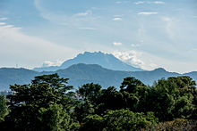

The local climate is equatorial and characterised by the annual southwest (April to October) and northeast (October to February) monsoons.[128] The temperature is moderated by the presence of the surrounding oceans.[125] Humidity is usually high, and the average annual rainfall is 250 cm (98 in).[128] The climates of the Peninsula and the East differ, as the climate on the peninsula is directly affected by wind from the mainland, as opposed to the more maritime weather of the East. Local climates can be divided into three regions, highland, lowland, and coastal. Climate change is likely to affect sea levels and rainfall, increasing flood risks and leading to droughts.
It would be difficult to overstate the attraction of Malaysia for anyone who appreciates the natural world. Its primal forests, ranging from shoreline mangrove to mountaintop oak, are of the sort that most of the world now knows only in myth. Although Malaysia's size is similar to that of Norway, natural trees and forests cover almost three quarters of the land, an area equivalent to almost the entire United Kingdom. One can walk for hundreds of miles in Malaysia under a continuous canopy of green, marveling at an abundance of plant and animal species equaled by no other location in the entire world. A single half-kilometer plot of land in Borneo's lowland dipterocarp forest, for example, may well contain more than eight hundred different species of trees alone, a stunning degree of variety that pales, however, in comparison to the profusion and diversity of flowers, birds, ferns, and insects.
This endlessly varied environment also shelters a host of the world's rarest and most remarkable animals: the Sumatran Rhinoceros, the Clouded Leopard and Malaysian Tiger, the Sun Bear, the Monitor Lizard, and the Orang Utan, or "man of the forest," are just a few examples. Malaysia's forests are also home to Southeast Asia's highest peak, as well as to the world's most extensive and capacious natural caverns. The forest itself is one of the most ancient on the planet, far older than the equatorial forests of the Amazon or the Congo.
Equally exciting discoveries are now being made by genetic biologists, who have begun searching the wealth of life in Malaysia's forests for new medicines with which to combat AIDS, cancer, and many other illnesses.
Besides the many splendid sights in Malaysia's National Parks, visitors can enjoy an exhaustive tour of thrills and spills during their visit--boating through swirling rapids or between emerald green islands, stalking big game and fly-fishing for giant carp, bird-watching, mountain climbing, spelunking, swimming in placid river waters, or camping amidst giant tropical trees.
| month | Jan. | Feb. | Mar. | Arp. | May | Jun. | Jul. | Aug. | Sept. | Oct. | Nov. | Dec. |
|---|---|---|---|---|---|---|---|---|---|---|---|---|
| Average temperature | 27.9 | 27.5 | 27.8 | 28.9 | 28.9 | 29.4 | 29.2 | 29.9 | 28.2 | 28.1 | 27.6 | 27.5 |
| Average maximum | 28.7 | 28.9 | 29.3 | 31.2 | 32.2 | 32.1 | 33.2 | 32.7 | 32.5 | 31.8 | 29.4 | 29.8 |
| Average minimum | 44 | 44 | 46 | 46 | 53 | 61 | 75 | 77 | 68 | 61 | 57 | 49 |
| Extreme maximum | 65 | 65 | 63 | 64 | 59 | 47 | 52 | 63 | 65 | 62 | 62 | 62 |
| Extreme minimum | 18.3 | 16.0 | 15.0 | -3.2 | 2.6 | 10.5 | 16.6 | 11.4 | 4.3 | 3.5 | 1.06 | 15.6 |
| Precipitation mm | 215.8 | 215.8 | 319.6 | 323.5 | 497.4 | 380.9 | 402.2 | 504.0 | 519.2 | 479.1 | 442.4 | 311.3 |